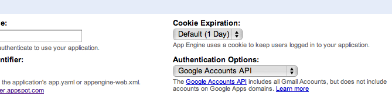
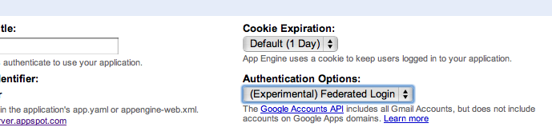
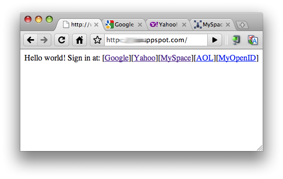
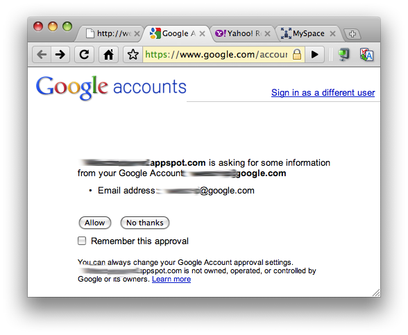
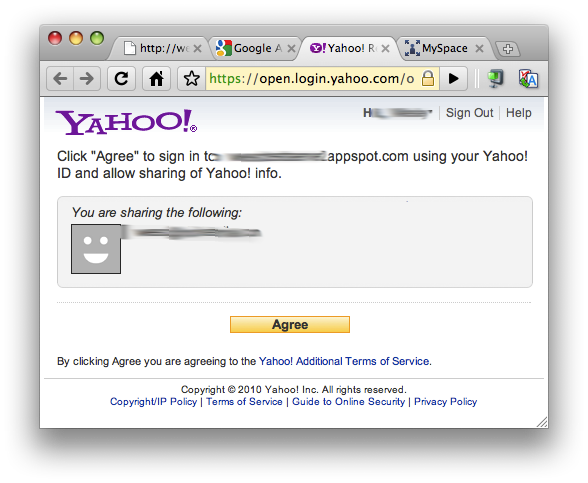
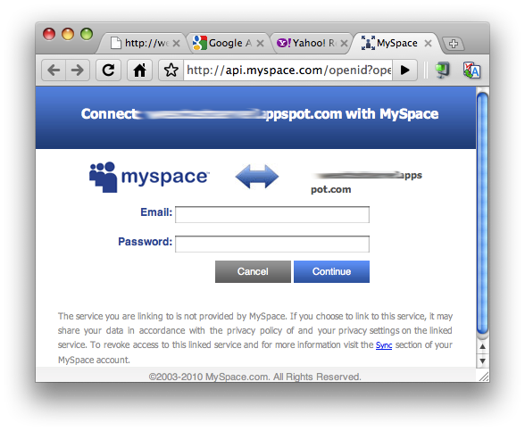
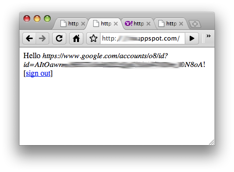
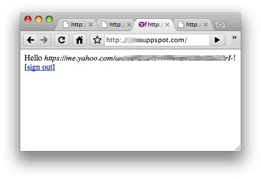
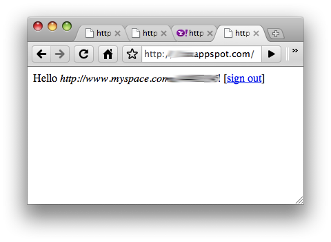

Federated authentication (OpenID) was introduced to App Engine in SDK 1.3.4 (May 2010), integrated as part of the Users service (Python | Java). The content here is intended to complement the existing documentation. The features outlined here cannot be used in older versions of the SDK.
Background
Authentication and authorization are two topics of current interest to the web application community at-large. Users and developers often confuse the two, and even worse, many can't distinguish between them. To understand them better requires one to know more keenly what their differences are. When you hear authentication, think "user identities," e.g., logins and passwords; and when you see the term authorization, think "APIs" and "data access." In some cases, the two will overlap, such as when you go to a Twitter photo hosting and sharing website: you will authenticate with Twitter which also authorizes the site (via OAuth [more on OAuth in a bit]) to give it the ability to add a pic and status message to your Twitter stream.
Well-known and established Internet brands such as Google, Yahoo!, and MSN have been using single sign-on (SSO) solutions across their respective properties for years, and more recently, have started to act as identity providers for third-party sites. In addition, the huge growth in popularity of social networks such as Twitter, MySpace, and Facebook have pushed them to become identity platforms as well. It is increasingly common for new websites and services to leverage these existing platforms to authenticate users who have grown wary of registering for new services. Leveraging such services allows users to login with a familiar name. However, readers should be aware that there are two different flavors of authentication, delegated and federated.
Twitter's system, as described above, is known as delegated authentication. Many websites, opting out of building their own authentication system altogether, are effectively outsourcing, or "delegating," it to more well-known entities such as Twitter. Logging into a web app with Facebook Connect is another delegation example, although it is a closed system as opposed to "Sign in with Twitter" which uses OAuth. (OAuth is an open authorization system, a concept outside of the scope of this article but which is used regularly in conjunction with delegated authentication.)
Delegated authentication is one effort to bring the concept of Internet SSO to reality. The fewer accounts users have to worry about, the better the web scales. However, you have another problem now: developers who use this type of authentication are requiring their users have Twitter or Facebook accounts. This is not the "create one identity somewhere and use it any anywhere" type of solution that has been envisioned. In comes federated authentication, a solution that's much closer to true Internet SSO.
Federated Authentication and OpenID
Federated authentication is a decentralized security mechanism not tied to any one particular provider, and OpenID is an open standard which implements federated authentication. With OpenID, users can create an identity (username and password [or alternatives such as biometrics, keyfob, etc.]) at any OpenID provider and be able to use that same identity at any online app which accepts OpenID logins. Google has supported the OpenID 2.0 protocol since 2008 in a variety of products such as Blogger and Google Apps.
In the land of OpenID, there are two types of players:
- Identity provider or Server – service which hosts OpenID identities and can authenticate users whose credentials were created there
- Relying party or Consumer – any application that has delegated its authentication to an OpenID provider
Google is both an identity provider – letting users login to a variety of Google and third-party websites with their Google Account information – as well as a relying party: Blogger and Google Apps let users sign in to those services using their OpenID identity. Note that sites that require users to sign in with a specific authority, such as Google or Yahoo! with OpenIDs created at those sites, are examples of delegated authentication even though OpenID is used. (Often in documentation, you will find that the term "OpenID" is also used interchangeably [like we just did] to refer to an OpenID identity as well as the protocol itself.) A truly federated system allows you to login using an identity created at any OpenID provider.
Federated Authentication in App Engine
As of release 1.3.4, federated login via OpenID has been made available to App Engine users, meaning that developers can create apps that use OpenID as their authentication mechanism. This is a breakthrough and highly-desired feature for application developers who want to offer more flexible authentication to their users rather than having to roll their own or simply using App Engine's Users service which requires their users to have a Google Account. The addition of OpenID means that apps written for App Engine can now support three forms of authentication:
- Google Accounts (identity provider)
- Google Apps (identity provider)
- OpenID (relying party)
Setup
Applications can be configured to use "Google Accounts" (the default) or "Federated Login" at creation time. Existing applications can migrate to federated authentication via a configuration change in the Admin Console Dashboard.

Figure 1. Google Accounts authentication is the default.
Go to the "Authentication Options" pulldown and select "(Experimental) Federated Login" to switch to OpenID. Your settings will now look like this:

Figure 2. Selecting "Federated Login" as the authentication option.
For more precise steps on how to do this as well as a general introduction to this feature in App Engine, check out the Users service overview documentation (Python | Java). There is also a blog post where you can find additional information.
If your app already exists, switching from using Google Accounts to OpenID as your authentication mechanism does not affect your app's existing User objects as Google will now serve as those users' OpenID provider. However, you should avoid doing the reverse as OpenID comprises a superset of the entire space of user identification (more on this below).
One thing that hasn't changed is requiring users to login to your app. If you wish to allow unauthenticated users, you can do that too. If not, you require users login "at runtime" by doing a redirect to a link created by create_login_url() (Python) or createLoginURL() (Java). Or, if there are multiple entry points to your app, you can make it a configuration setting in your app.yaml (Python) or web.xml (Java) file. You can review how to do this in the docs (Python | Java).
WARNING: Be aware that if you change your authentication setting to "Federated Login" and add require logins in your config file without changing any application code, there will be automatic redirection to /_ah/login_required, so if you're not handling it, you'll get infinite recursion, as discovered recently by early adopters.
Below are sample configurations for Python and Java to handle this redirection. Remember, you only need to do this if you do not change your application code. (In the code example further along in this article, we did not require users be logged in when accessing our app so these alterations were not made.)
In this Python app.yaml file, we have set user login to be required for the main.py controller, thus we only need to add a section to handle the /_ah/login_required URL:
handlers:
- url: /_ah/login_required
script: do_openid_login.py
- url: .*
script: main.py
login: required
The changes to web.xml for Java users are similar. We start by specifying that logins are required for some URL pattern of your app:
<security-constraint>
<web-resource-collection>
<url-pattern>.*</url-pattern>
</web-resource-collection>
<auth-constraint>
<role-name>*</role-name>
</auth-constraint>
</security-constraint>
With standard Google authentication, you wouldn't need a specific handler. App Engine automatically brings up a Google Accounts login page for users. With OpenID, if you wish to use a different authentication screen, and presumably to accept non-Google OpenIDs you would, add a handler for /_ah/login_required:
<servlet>
<servlet-name>LoginRequiredServlet</servlet-name>
<servlet-class>mysite.server.LoginRequiredServlet</servlet-class>
</servlet>
<servlet-mapping>
<servlet-name>LoginRequiredServlet</servlet-name>
<url-pattern>/_ah/login_required</url-pattern>
</servlet-mapping>
Whether you choose do_openid_login.py or LoginRequiredServlet.java, the corresponding snippet of code will likely contain HTML and display a nice login prompt to your users letting them enter their OpenID to authenticate with.
WARNING: at the time of this writing, OpenID is not supported if your app runs in secure mode using HTTPS.
Federated identity providers
The magic of OpenID in App Engine happens in the create_login_url() or createLoginURL() calls to generate the link that users click on or that your app redirects to appropriate provider for authentication. There are currently a number of OpenID providers your users can choose from.
Provider types
There are two flavors of provider types: direct providers like Google and Yahoo! require only a generic federated identity that has no username associated with it. These are called unbound discoverable URLs because they're not tied to any particular user – in other words, there is no information contained within the OpenID URL string to uniquely identify users.
In contrast, Flickr, WordPress, Blogger, and LiveJournal are known as username providers because all require you to provide a URL which does. Not surprisingly, those are called bound discoverable URLs. Each of these URLs contains a username in one form or another to directly associate it with a user registered at that provider.
Some providers do both, meaning they will accept both bound as well as unbound discoverable URLs. AOL, MyOpenID, and MySpace are examples of providers that accept both types. Regardless of which method you choose, be sure that your interface is aware of the requirements and prompt if necessary from your users.
In any case, that "URL" is passed as the federated_identity parameter to the users.create_login_url(federated_identity=URL) call to generate the HTML link that the user can select. Below are examples of both types of providers you can use as URL in your call (domain names are case-insensitive). These lists aren't exhaustive, however.
Direct provider federated identities
-
www.google.com/accounts/o8/id (shorter alternative: gmail.com)
-
yahoo.com
-
myspace.com
-
aol.com
-
myopenid.com
Username provider federated identities
-
flickr.com/USERNAME
-
USERNAME.wordpress.com
-
USERNAME.blogspot.com
-
USERNAME.livejournal.com
-
openid.aol.com/USERNAME
-
USERNAME.myopenid.com
-
www.myspace.com/USERNAME
UI presentation
There are a variety of ways you can let your users select their federated provider and login:
- Present links for users to click
- Let users select from a pulldown
- Create a text field for users to enter an OpenID
- Have a login page with logos
For an example of how to design and structure your login page, check out Google's federated login user experience summary document. You can also take a look at this flexible and stylish jQuery plugin – at this page, you will also find other direct and username providers that may not have been listed above.
Federated login and logout
As far as integrating OpenID into your app, the API call to get a link for users gets one or two new optional parameters – there are no other changes. This was done intentionally to simplify the process for developers and to preserve the existing API. The new federated_identity parameter is passed to create_login_url(); likewise for federatedIdentity and createLoginURL() method in Java. You would use this same value to instantiate new User objects with.
There are no changes to existing User objects that you may have stored when using only Google Accounts or Google Apps domain, even when you switch to federated authentication. All user data in your datastore and user IDs are preserved and still valid. Earlier, we advised you that once you move to using OpenID, you should not revert back to using only Google Accounts. The reason for this is because once you start storing new user information created from OpenIDs in your datastore, there is no way to corroberate the non-Google generated user IDs in your datastore nor any way to convert them to any valid type of Google user.
If you look at the docs, you'll see that both create_login_url() (Python) or createLoginURL() (Java) have an "authentication domain" parameter (auth_domain for Python or authDomain for Java) in their signatures, but it is not used so just pass an empty string (Java) or leave it out (Python). dest_url and destinationURL work as before. Java has an additional attributesRequest parameter for additional attributes to send as part of the request.
Logging out is more interesting. As before, you will use create_logout_url() (Python) or createLogoutURL() (Java) for your app. When the user clicks on it, they will log out of the App Engine app but not logged out of the federated provider. In other words, if your user then logs into your app again, they will not be prompted to enter their credentials. Instead, they will likely get a choice to just continue (yes/no) to your app, and upon clicking it, go directly to whatever destination URL you had set. There is no equivalent of a "single sign-out" to log users out of both your App Engine app as well as with their OpenID provider.
WARNING:
You should strongly urge users that if using a computer that is not their's, say a kiosk in a public venue, they should clear all cookies in addition to logging out. (A less attractive alternative is to tell users to logout of your app then go to their OpenID provider's website and sign-out from there too.)
Examples
Let's look at some code! As described above, login screens can be as simple or as complex as you like. The most generic way sends users directly to an OpenID provider where they enter their OpenID and password. In the example app below, all we do is take the "Hello World" example and add the ability for the user to do a federated login:
main.py
from google.appengine.api import users
from google.appengine.ext import webapp
from google.appengine.ext.webapp.util import run_wsgi_app
providers = {
'Google' : 'www.google.com/accounts/o8/id', # shorter alternative: "Gmail.com"
'Yahoo' : 'yahoo.com',
'MySpace' : 'myspace.com',
'AOL' : 'aol.com',
'MyOpenID' : 'myopenid.com'
# add more here
}
class MainHandler(webapp.RequestHandler):
def get(self):
user = users.get_current_user()
if user: # signed in already
self.response.out.write('Hello <em>%s</em>! [<a href="%s">sign out</a>]' % (
user.nickname(), users.create_logout_url(self.request.uri)))
else: # let user choose authenticator
self.response.out.write('Hello world! Sign in at: ')
for name, uri in providers.items():
self.response.out.write('[<a href="%s">%s</a>]' % (
users.create_login_url(federated_identity=uri), name))
application = webapp.WSGIApplication([
('/', MainHandler),
], debug=True)
def main():
run_wsgi_app(application)
if __name__ == '__main__':
main()
main.java
import java.io.IOException;
import java.io.PrintWriter;
import java.util.HashMap;
import java.util.HashSet;
import java.util.Map;
import java.util.Set;
import javax.servlet.http.HttpServlet;
import javax.servlet.http.HttpServletRequest;
import javax.servlet.http.HttpServletResponse;
import com.google.appengine.api.users.User;
import com.google.appengine.api.users.UserService;
import com.google.appengine.api.users.UserServiceFactory;
@SuppressWarnings("serial")
public class OpenIdDemoServlet extends HttpServlet {
private static final Map<String, String> openIdProviders;
static {
openIdProviders = new HashMap<String, String>();
openIdProviders.put("Google", "www.google.com/accounts/o8/id");
openIdProviders.put("Yahoo", "yahoo.com");
openIdProviders.put("MySpace", "myspace.com");
openIdProviders.put("AOL", "aol.com");
openIdProviders.put("MyOpenId.com", "myopenid.com");
}
@Override
public void doGet(HttpServletRequest req, HttpServletResponse resp)
throws IOException {
UserService userService = UserServiceFactory.getUserService();
User user = userService.getCurrentUser(); // or req.getUserPrincipal()
Set<String> attributes = new HashSet();
resp.setContentType("text/html");
PrintWriter out = resp.getWriter();
if (user != null) {
out.println("Hello <i>" + user.getNickname() + "</i>!");
out.println("[<a href=\""
+ userService.createLogoutURL(req.getRequestURI())
+ "\">sign out</a>]");
} else {
out.println("Hello world! Sign in at: ");
for (String providerName : openIdProviders.keySet()) {
String providerUrl = openIdProviders.get(providerName);
String loginUrl = userService.createLoginURL(req
.getRequestURI(), null, providerUrl, attributes);
out.println("[<a href=\"" + loginUrl + "\">" + providerName + "</a>] ");
}
}
}
}
The way this simple app works in either language is that you get a simple login screen like the below:

Figure 3. Sample app offering multiple login links.
Users will then select a provider. Let's randomly choose a few so you can see what each login screen looks like:



Figure 4. Login experience with: a) Google, b), Yahoo!, c) MySpace
After logging in, you can verify the user's OpenID username as presented in our sample app above via the user.getNickname() (Java) and user.nickname() (Python).



Figure 5. Various output from app after logging in with different OpenID providers.
Remember that these are just ultra-simplistic login screens. We linked you to more complex ones in the UI Presentation section above, but here is an example of a simple login selector box with pre-made links for users:
Figure 6. Graphically-oriented OpenID selector
It is important to note that App Engine's SDK does not provide a login screen. Building a login screen is your responsibility as the developer. The sample code above is sufficient for a basic authentication mechanism, but be aware that this only logs users into your application via their identity provider of choice and nothing more.
Authorization
As mentioned at the beginning of this article, authentication and authorization are often confused. The topic of our discussion here is purely authentication – the concept of user identities – usually controlled or distinguished by a username and password. Although authorization is out of the scope of this article, we must mention that it is also possible to roll-in authorization with authentication, such as with services like Twitter or open APIs using OAuth, which App Engine also supports (Python | Java). You can also find out more about the general hybrid approach using OpenID for authentication combined with OAuth for data access through Google APIs.
Unsupported features
Although we're happy to introduce federated login, we would also like to emphasize that this is just the beginning: at the time of this writing, App Engine does not support other OpenID features such as Attribute Exchange (AX), AX Trust, Provider Auth Policy Extension (PAPE), OpenID User Interface Extension (UIEX), Remote API, nor secure/HTTPS service. Keep an eye on our public roadmap as well as our frequent release cycle for new features.
Conclusion
Federated authentication gives developers a fourth option of providing authentication services to their applications. Now, in addition to either requiring your users to have Google Accounts or be part of a Google Apps domain, you can offer them the ability to authenticate through a third-party OpenID provider such as Yahoo!, MySpace, and of course, Google. A federated login service brings universal single-sign on closer to reality and ultimately offers developers more choices and a more flexible and convenient user experience.